14. Anhänge
14.1. SGBD „ “ SQL „Server Express 2005“
14.1.1. Installation
Das Dokument SGBD SQL Server Express 2005 ist unter der URL [http://msdn.microsoft.com/vstudio/express/sql/download/] verfügbar:
 |
- unter [1]: Laden Sie zunächst die Plattform .NET 2.0 herunter und installieren Sie sie
- unter [2]: Anschließend SQL Server Express 2005 installieren und herunterladen
- in [3]: Anschließend SQL Server Management Studio Express installieren und herunterladen, mit dem sich der SQL Server verwalten lässt
Durch die Installation von SQL Server Express wird ein Ordner in [Démarrer / Programmes ] erstellt:
 |
- in [1]: die Konfigurationsanwendung für den SQL-Server. Ermöglicht außerdem das Starten und Beenden des Servers
- in [2]: die Verwaltungsanwendung des Servers
14.1.2. SQL-Server starten/beenden
Wie bei den vorherigen SGBD-Instanzen wurde der SQL Server Express als Windows-Dienst mit automatischem Start installiert. Wir ändern diese Konfiguration:
[Démarrer / Panneau de configuration / Performances et maintenance / Outils d'administration / Services ]:
 |
- in [1]: Wir doppelklicken auf [Services]
- in [2]: Wir sehen, dass ein Dienst namens [SQL Server] vorhanden ist, dass er gestartet ist ([3]) und dass er automatisch gestartet wird ([4]).
- in [5]: Ein weiterer Dienst, der mit dem SQL-Server verbunden ist und den Namen „SQL Server Browser“ trägt, ist ebenfalls aktiv und wird automatisch gestartet.
Um diese Einstellung zu ändern, doppelklicken wir auf den Dienst [SQL Server]:
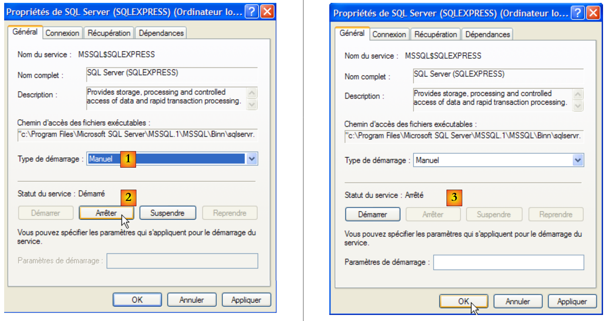 |
- in [1]: Wir stellen den Dienst auf manuellen Start um
- bei [2]: Wir beenden ihn
- bei [3]: Wir bestätigen die neue Konfiguration des Dienstes
Mit dem Dienst [SQL Server Browser] wird ebenso verfahren (siehe [5] weiter oben). Um den Dienst SQL Server 2005 manuell zu starten und zu beenden, kann die Anwendung [1] aus dem Ordner [SQL server] verwendet werden:
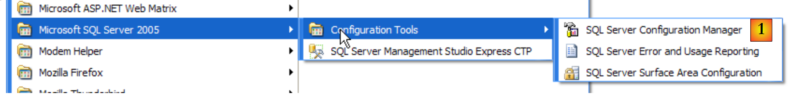 |
 |
- in [1]: Stellen Sie sicher, dass das Protokoll TCP/IP aktiviert ist (enabled), und wechseln Sie anschließend zu den Eigenschaften des Protokolls.
- in [2]: Auf der Registerkarte [IP Addresses], Option [IPAll]:
- Das Feld [TCP Dynamic ports] bleibt leer
- Der Listening-Port des Servers ist in [TCP Port] auf 1433 festgelegt
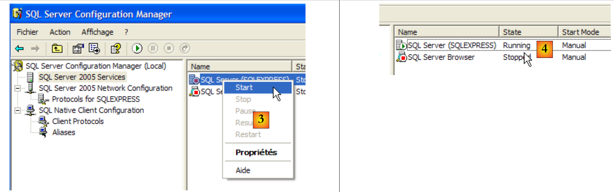 |
- in [3]: Ein Rechtsklick auf den Dienst [SQL Server] öffnet die Optionen zum Starten und Beenden des Servers. Hier wird er gestartet.
- in [4]: SQL-Server wird gestartet
14.1.3. Erstellung eines JPA-Benutzers und einer JPA-Datenbank
Starten Sie den Prozess SGBD wie oben beschrieben und anschließend die Verwaltungsanwendung [1] über das untenstehende Menü:
 |
 |
- in [1]: Man meldet sich als Windows-Administrator am SQL-Server an
- in [2]: Konfigurieren Sie die Verbindungseigenschaften
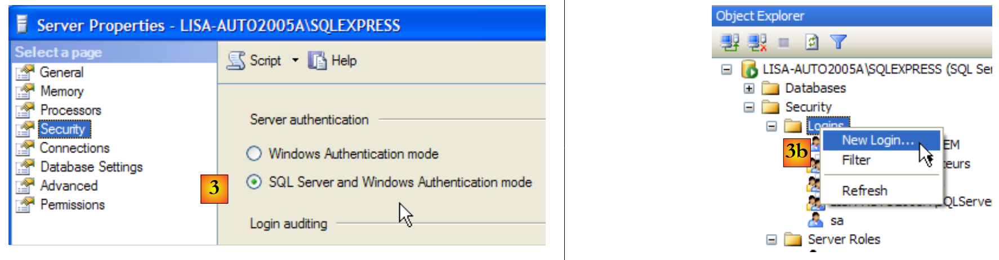 |
- in [3]: Man aktiviert einen gemischten Verbindungsmodus zum Server: entweder mit einem Windows-Login (ein Windows-Benutzer) oder mit einem SQL-Server-Login (ein im SQL-Server definiertes Konto, unabhängig von jedem Windows-Konto).
- in [3b]: Es wird ein SQL-Server-Benutzer angelegt
 |
- in [4]: Option [General]
- in [5]: der Benutzername
- in [6]: das Passwort (hier jpa)
- in [7]: Option [Server Roles]
- in [8]: Der Benutzer „jpa“ erhält die Berechtigung, Datenbanken anzulegen
Diese Konfiguration wird bestätigt:
 |
- in [9]: Der Benutzer „jpa“ wurde angelegt
- in [10]: Man meldet sich ab
- in [11]: Wir melden uns erneut an
 |
- in [12]: Anmeldung als Benutzer jpa/jpa
- in [13]: Nach der Anmeldung legt der Benutzer „jpa“ eine Datenbank an
 |
- in [14]: Die Datenbank erhält den Namen „jpa“
- in [15]: und gehört dem Benutzer jpa
- in [16]: Die Datenbank „jpa“ wurde angelegt
14.1.4. Erstellung der Tabelle [ARTICLES] in der Datenbank jpa
Wir erstellen eine Tabelle [ARTICLES] anhand des folgenden Skripts SQL:
/* Tabelle anlegen */
CREATE TABLE ARTICLES (
ID INTEGER NOT NULL,
NOM VARCHAR(20) NOT NULL,
PRIX DOUBLE PRECISION NOT NULL,
STOCKACTUEL INTEGER NOT NULL,
STOCKMINIMUM INTEGER NOT NULL
);
INSERT INTO ARTICLES (ID, NOM, PRIX, STOCKACTUEL, STOCKMINIMUM) VALUES (1, 'article1', 100, 10, 1);
INSERT INTO ARTICLES (ID, NOM, PRIX, STOCKACTUEL, STOCKMINIMUM) VALUES (2, 'article2', 200, 20, 2);
INSERT INTO ARTICLES (ID, NOM, PRIX, STOCKACTUEL, STOCKMINIMUM) VALUES (3, 'article3', 300, 30, 3);
/* Integritätsbeschränkungen */
ALTER TABLE ARTICLES ADD CONSTRAINT CHK_ID check (ID>0);
ALTER TABLE ARTICLES ADD CONSTRAINT CHK_PRIX check (PRIX>0);
ALTER TABLE ARTICLES ADD CONSTRAINT CHK_STOCKACTUEL check (STOCKACTUEL>0);
ALTER TABLE ARTICLES ADD CONSTRAINT CHK_STOCKMINIMUM check (STOCKMINIMUM>0);
ALTER TABLE ARTICLES ADD CONSTRAINT CHK_NOM check (NOM<>'');
ALTER TABLE ARTICLES ADD CONSTRAINT UNQ_NOM UNIQUE (NOM);
/* Primärschlüssel */
ALTER TABLE ARTICLES ADD CONSTRAINT PK_ARTICLES PRIMARY KEY (ID);
 |
- in [1]: Wir öffnen ein Skript SQL
- in [2]: Man gibt das Skript SQL an
- in [3]: Man muss sich erneut anmelden (jpa/jpa)
- in [4]: das Skript, das ausgeführt werden soll
- in [5]: Die Datenbank auswählen, in der das Skript ausgeführt werden soll
- in [6]: Ausführen
 |
- in [7]: das Ergebnis der Ausführung: Die Tabelle [ARTICLES] wurde angelegt.
- in [8]: Der Inhalt wird abgefragt
- in [9]: Der Inhalt der Tabelle.
14.1.5. Der Konnektor ADO.NET von SQL Server Express
 |
Der Konnektor ADO.NET umfasst alle Klassen, die es einer .NET-Anwendung ermöglichen, den SGBD SQL Server Express 2005 zu nutzen. Die Klassen des Konnektors befinden sich im Namensraum [System.Data], der auf jeder .NET-Plattform nativ verfügbar ist.
14.2. Der SGBD „ “ MySQL5
14.2.1. Installation
Das SGBD MySQL5 ist unter der URL [http://dev.mysql.com/downloads/] verfügbar:
 |
- unter [1]: Wählen Sie die gewünschte Version
- unter [2]: Wählen Sie eine Windows-Version
 |
- zu [3]: Wählen Sie die gewünschte Windows-Version aus
- in [4]: Die heruntergeladene ZIP-Datei enthält eine ausführbare Datei [Setup.exe] [4b], die extrahiert und ausgeführt werden muss, um MySQL5 zu installieren
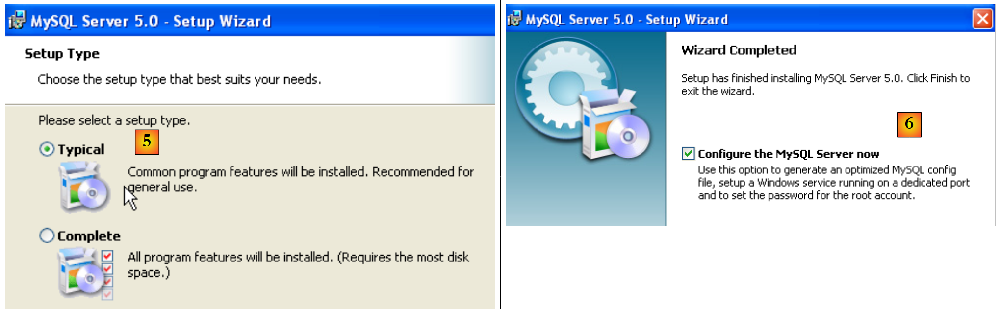 |
- in [5]: Wählen Sie eine Standardinstallation
- in [6]: Nach Abschluss der Installation kann der Server konfiguriert werden MySQL5
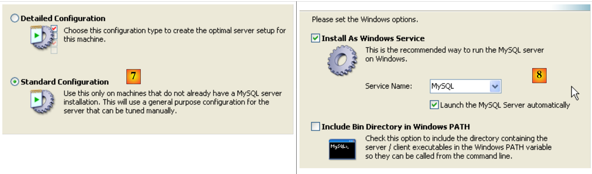 |
- in [7]: Wählen Sie eine Standardkonfiguration, bei der die wenigsten Fragen gestellt werden
- in [8]: Der Server MySQL5 wird als Windows-Dienst ausgeführt
 |
- in [9]: Standardmäßig ist der Serveradministrator „root“ ohne Passwort. Man kann diese Konfiguration beibehalten oder „root“ ein neues Passwort zuweisen. Wenn die Installation von MySQL5 auf die Deinstallation einer früheren Version folgt, kann dieser Vorgang fehlschlagen. Es gibt kaum Möglichkeiten, dies rückgängig zu machen.
- in [10]: Es wird die Konfiguration des Servers abgefragt
Durch die Installation von MySQL5 wird ein Ordner in [Démarrer / Programmes ] erstellt:

Mit [MySQL Server Instance Config Wizard] kann der Server neu konfiguriert werden:
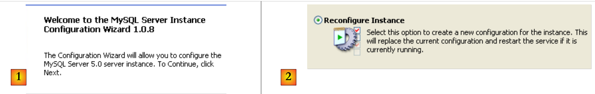 |
 |
 |
- in [3]: Wir ändern das Root-Passwort (hier root/root)
14.2.2. MySQL5 starten / beenden
Der Server MySQL5 wurde als Windows-Dienst mit automatischem Start installiert, c.a.d wird bereits beim Start von Windows gestartet. Diese Betriebsweise ist unpraktisch. Wir werden sie ändern:
[Démarrer / Panneau de configuration / Performances et maintenance / Outils d'administration / Services ]:
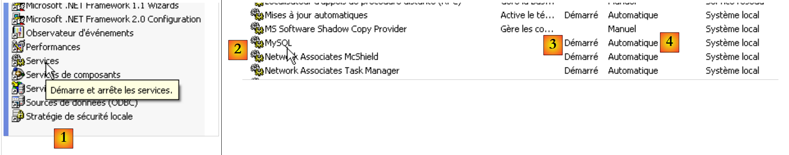 |
- in [1]: Wir doppelklicken auf [Services]
- in [2]: Wir sehen, dass ein Dienst namens [MySQL] vorhanden ist, dass er gestartet ist ([3]) und dass er automatisch gestartet wird ([4]).
Um diese Einstellung zu ändern, doppelklicken wir auf den Dienst [MySQL]:
 |
- in [1]: Wir stellen den Dienst auf manuellen Start um
- in [2]: Wir beenden ihn
- bei [3]: Wir bestätigen die neue Konfiguration des Dienstes
Um den Dienst MySQL manuell zu starten und zu beenden, können zwei Verknüpfungen erstellt werden:
 |
- in [1]: die Verknüpfung zum Starten von MySQL5
- [2]: Die Verknüpfung zum Beenden
14.2.3. Verwaltungs-Clients für MySQL
Auf der Website von MySQL finden sich Verwaltungs-Clients für SGBD:
 |
- in [1]: Wählen Sie [MySQL GUI Tools], das verschiedene grafische Clients enthält, mit denen Sie entweder das SGBD verwalten oder nutzen können
- in [2]: Wählen Sie die passende Windows-Version aus
 |
- in [3]: Man lädt eine .msi-Datei herunter, die ausgeführt werden muss
- in [4]: Nach Abschluss der Installation erscheinen neue Verknüpfungen im Ordner [Menu Démarrer / Programmes / mySQL].
Starten Sie MySQL (über die von Ihnen erstellten Verknüpfungen) und anschließend [MySQL Administrator] über das obige Menü:
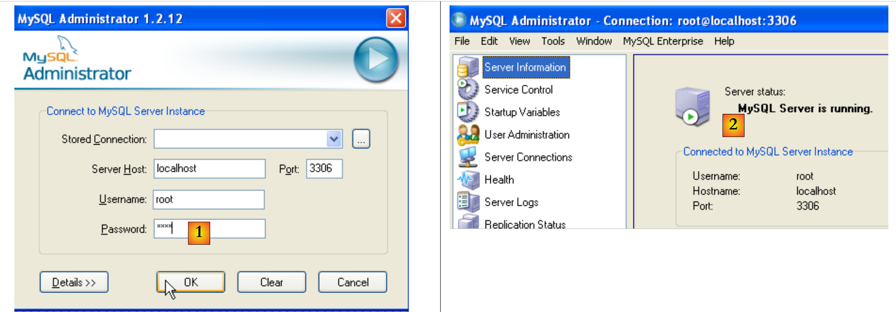 |
- in [1]: Geben Sie das Passwort des Benutzers „root“ (hier „root“) ein
- in [2]: Sie sind nun angemeldet und sehen, dass MySQL aktiv ist
14.2.4. Erstellung eines Benutzers „jpa“ und einer Datenbank „jpa“
Wir erstellen nun eine Datenbank namens „jpa“ und einen gleichnamigen Benutzer. Zunächst den Benutzer:
 |
- in [1]: Wir wählen [User Administration] aus
- in [2]: Wir klicken mit der rechten Maustaste auf den Eintrag [User accounts], um einen neuen Benutzer anzulegen
- in [3]: Der Benutzer heißt jpa und sein Passwort lautet jpa
- in [4]: Die Erstellung wird bestätigt
- in [5]: Der Benutzer [jpa] erscheint im Fenster [User Accounts]
Nun zur Datenbank:
 |
- in [1]: Auswahl der Option [Catalogs]
- in [2]: Rechtsklick auf das Fenster [Schemata], um ein neues Schema zu erstellen (bezeichnet eine Datenbank)
- in [3]: Das neue Schema wird benannt
- in [4]: Es erscheint im Fenster [Schemata]
 |
- in [5]: Das Schema [jpa] wird ausgewählt
- in [6]: Die Objekte des Schemas [jpa] werden angezeigt, insbesondere die Tabellen. Es gibt noch keine. Mit einem Rechtsklick könnten Sie welche anlegen. Wir überlassen dies dem Leser.
Kehren wir zum Benutzer [jpa] zurück, um ihm alle Rechte für das Schema [jpa] zu erteilen:
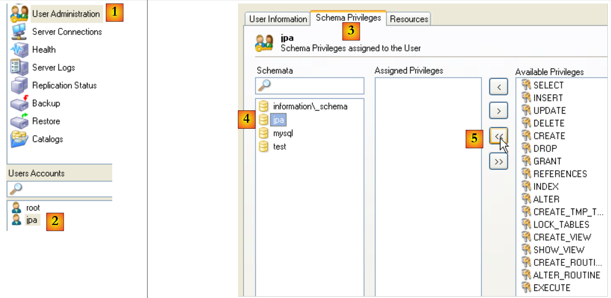 |
- in [1], dann in [2]: Wählen Sie den Benutzer [jpa]
- in [3]: Wählen Sie die Registerkarte [Schema Privileges]
- in [4]: Man wählt das Schema [jpa] aus
- in [5]: Dem Benutzer [jpa] werden alle Berechtigungen für das Schema [jpa] erteilt
 |
- in [6]: Die vorgenommenen Änderungen werden bestätigt
Um zu überprüfen, ob der Benutzer [jpa] mit dem Schema [jpa] arbeiten kann, beenden wir den Administrator MySQL. Wir starten ihn neu und melden uns diesmal unter dem Namen [jpa/jpa] an:
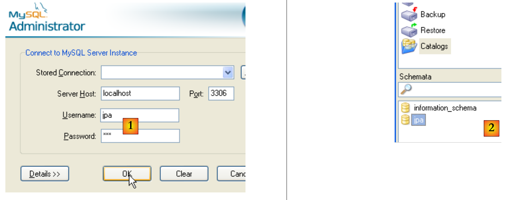 |
- in [1]: Man meldet sich an (jpa/jpa)
- unter [2]: Die Anmeldung war erfolgreich, und in [Schemata] sieht man die Schemata, für die man Berechtigungen hat. Man sieht das Schema [jpa].
Wir werden nun mithilfe eines Skripts SQL eine Tabelle [ARTICLES] anlegen.
 |
- in [1]: Verwenden Sie die Anwendung [MySQL Query Browser]
- in [2], [3], [4]: sich anmelden (jpa / jpa / jpa)
 |
- in [5]: ein Skript SQL öffnen, um es auszuführen
- in [6]: das folgende Skript [schema-articles.sql] angeben:
 |
- in [7]: das geladene Skript
- in [8]: Es wird ausgeführt
- in [9]: Die Tabelle [ARTICLES] wurde angelegt
14.2.5. Installation des Konnektors „ “ ADO.NET von MySQL5
Der Konnektor ADO.NET von MySQL5 ist (Stand: April 2008) unter der Adresse [http://dev.mysql.com/downloads/connector/net/5.1.html] verfügbar:
 |
Durch die Installation dieses Konnektors wird der Plattform ein Namespace hinzugefügt:
14.2.6. Installation des Treibers „ “ ODBC „ “ von MySQL5
Der ODBC-Konnektor (Open DataBase Connectivity) von MySQL5 ist (Stand: April 2008) unter der Adresse [http://dev.mysql.com/downloads/connector/odbc/3.51.html] verfügbar:
 |  |
Nach der Installation kann das Vorhandensein des Konnektors ODBC wie folgt überprüft werden:
 |
- unter [1] die Option [Outils d'administration] auswählen (unter XP Pro: Startmenü / Systemsteuerung / Leistung und Wartung / Verwaltungstools)
- in [2], doppelklicken Sie auf [Sources de données (ODBC)]
- in [3] die Registerkarte [Pilotes ODBC] auswählen
- in [4] den Treiber ODBC von MySQL